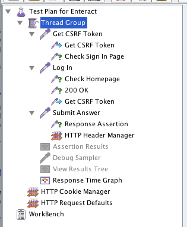
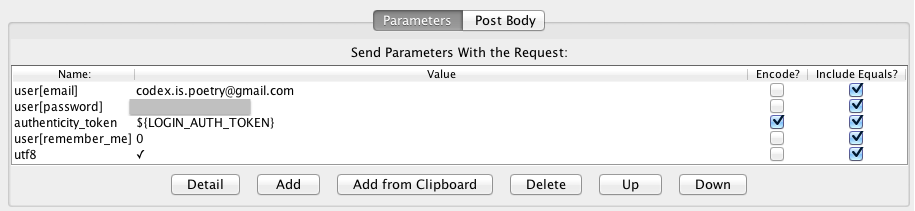
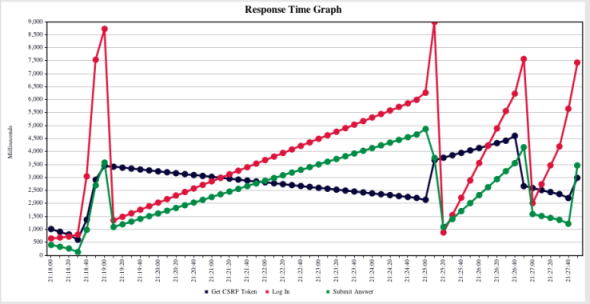

As part of a class project, I was given the opportunity to field a Rails application at Spring Carnival, an annual event held by Carnegie Mellon University (official press release.) Here, I will describe a subset of the risk mitigation strategies that we used to avoid hacking and maximize uptime.
In the first part of this series, I will focus on our use of JMeter for some simple load testing.
Amazon Elastic Beanstalk
The application was deployed on Amazon's Elastic Beanstalk, which has auto-scaling built in. However, this also meant that the application could have several web servers working off a single RDS server, which could cause some performance issues. Our goals for load testing were two-fold: first, we wished to ascertain the effectiveness of our auto-scaling policies; second, we wanted to ensure that the response times were reasonable even at twice the maximum expected load.
JMeter
JMeter was not the simplest tool for load testing, but developers (and ops engineers) seemed to agree that it was amongst the most powerful. The user manual provides detailed instructions for building a web test plan. In addition to a thread group and a config element for HTTP request defaults, we also added a HTTP cookie manager for maintaining sessions. The following screenshot captures the hierarchy of our setup.

Extract CSRF Token
Before our test user could login, it had to find the CSRF token on the page and submit that along with its credentials for Rails to accept the request. To do this, we added a HTTP Request to our thread group (or, more accurately, a request sampler). This sampler issues GET requests to /users/sign_in, and, using a Regular Expression Extractor (available under Post Processors), searches for the CSRF token with the following regex
input name="authenticity_token" type="hidden" value="(.*?)"
The matched token is stored in the LOGIN_AUTH_TOKEN variable for JMeter to use in subsequent requests.
Authenticate User
Next, we added another request sampler that issues POST requests to /users/sign_in with the user's email, password, and the CSRF token from the previous step. (I forgot to encode the CSRF token and spent a great amount of time wondering why Rails occasionally rejected requests from this sampler.) The following screenshot showed our configuration.

Do Something
Finally, we added request samplers to perform some action on the application. In my case, I was mainly worried about I/O performance, and thus added actions that would force read/writes to the database. Note that if some of these actions require CSRF tokens, in which case one could use the CSRF extraction described above and a HTTP Header Manager to include the X-CSRF header in the request. We also found it useful to include a response assertion to verify the status code of the response.
Measure Response Times
After some tinkering (such as using eager loading to reduce the number of database calls), we managed to improve the application's performance to (what I thought was) a reasonable level.
The entire JMX file is available here.
